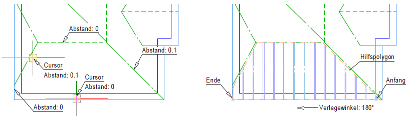
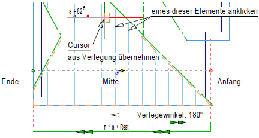
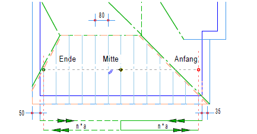
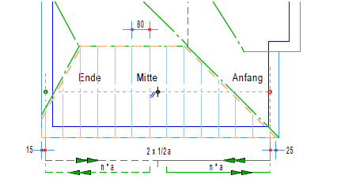
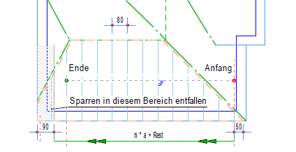
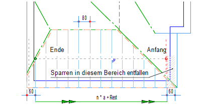
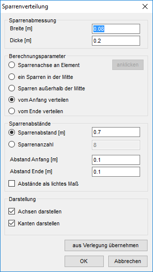

")
")
Für die Sparreneinteilung muss ein Polygon vorhanden sein, bei dem die erste und letzte Linie nicht parallel verlaufen, z. B. aus der Dachausmittlung. Weitere Unterteilungen können mit dem Linienprogramm [Konst1 | Linien] vorgenommen werden.
Nach Änderungen in der Sparrenverteilung (Dialog Sparrenverteilung) werden die Sparren gelöscht und neu gezeichnet. Manuelle Änderungen, z. B. teilweises Löschen von Sparrenlinien durch [Konst1 | Linien → FenLö] werden wieder zurückgesetzt.
So wird's gemacht:
§Geben Sie unter Abstand den Sparrenabstand ein und bestätigen Sie mit der Eingabetaste.
§Klicken Sie bei der Abfrage Linie wählen die Linien in Reihenfolge an.
Achten Sie darauf, dass die Mitte des Cursors auf der Seite liegt, auf die sich der Abstand bezieht.
Es wird ein affines Polygon mit den gewählten Einstellungen gezeichnet. Mit Rechtsklick geben Sie einen neuen Abstand ein.
§Klicken Sie auf .
§Geben Sie unter Verlegewinkel den Winkel an, in dem die Sparren verlegt werden sollen und bestätigen Sie mit der Eingabetaste.
Der Winkel bestimmt die Lage des Anfangspunktes. Bei schräg liegenden Bereichen müssen Sie den Gebäudewinkel berücksichtigen. Ändern Sie ggf. den Systemwinkel.

|
||||||


Der Dialog Sparrenverteilung wird geöffnet.
§Ändern Sie gegebenenfalls die Einstellungen für die Sparrenverteilung im Dialog Sparrenverteilung und klicken Sie auf OK.
Die Sparren werden neu gezeichnet.
Beispiel:
Verlegung von Sparren 8/20cm, e ≅ 80cm. Nur die Achsen sollen sichtbar sein.
 |
|
Klicken Sie die Linien so an, dass der Abstand auf der Seite der Cursormitte liegt. |
In dem Hilfspolygon wird die Sparrenverteilung aufgrund der Eingabeparameter dargestellt. |
 |
Sparrenachse an Element Aus Element anklicken → e = 0,826 m aAnf = 0; aEnd = 0 Wenn Sie am Anfang und/oder am Ende Abstände > 0 eingeben, werden die Sparren, die in diesen Bereichen liegen, nicht gezeichnet und der Anfangs- und/oder Endpunkt werden verschoben. Die übrigen Sparren verändern nicht ihre Lage. |
 |
ein Sparren in der Mitte Abstand e = 0,8 m aAnf = 0,35 m; aEnd = 0,50 m Die Mitte der Sparrenverlegung wird wie folgt ermittelt: Alle Punkte des Hilfspolygons werden senkrecht auf die Verlegerichtung projiziert. Die entferntesten Punkte markieren den Bereich. Davon werden die Abstände am Anfang und Ende abgezogen. Daraus wird die Mitte ermittelt. |
 |
Sparren außerhalb der Mitte Abstand e = 0,8 m aAnf = 0,25 m; aEnd = 0,2 m Von der Mitte wird jeweils ein halber Abstand abgezogen und dann von da aus mit dem eingestellten Abstand die Einteilung berechnet. |
 |
Vom Anfang verteilen Abstand e = 0,8 m aAnf = 0,5 m; aEnd = 0,9 m Von der Mitte wird jeweils ein halber Abstand abgezogen und dann von da aus mit dem eingestellten Abstand die Einteilung berechnet. Durch den Abstand am Ende wird hier der letzte Sparren unterdrückt. |
 |
Vom Ende verteilen Abstand e = 0,8 m aAnf = 0,6 m; aEnd = 0,6 m Wie vor beschrieben, jedoch wird hier vom Ende in Richtung Anfang verteilt. |
Optionen im Dialog "Sparrenverteilung"
Während Sie Eingaben im Dialog vornehmen, werden die Sparren sofort angepasst. Um in der Zeichnung zu navigieren, klicken Sie mit der linken Maustaste in die Zeichenfläche.
 |
Sparrenabmessung
Berechnungsparameter
|
Sparrenabstände
Sparrenabstand [m] Geben Sie den gewünschten Abstand ein. Daraus ergibt sich die Sparrenanzahl. Diese wird in dem inaktiven Eingabefeld angezeigt. Die Position des ersten und letzten Sparrens lässt sich hiermit nur bedingt exakt bestimmen. Wenn die Sparren am Anfang und Ende genau platziert werden sollen, wechseln Sie auf die Eingabe über die Sparrenanzahl. Sparrenanzahl Alternativ können Sie auch die Anzahl eingeben. Dann wird der Sparrenabstand berechnet und in dem entsprechenden Feld angezeigt. Abstand Anfang [m] Der Abstand bezieht sich im Normalfall auf die Sparrenachse! Wenn Sie sich in einer der beiden Eingaben befinden, wird der zugehörige Punkt durch ein Kreuz markiert. Abstand Ende [m] Sie können am Anfang und am Ende jeweils einen Abstand angeben. Damit wird der Verlegebereich angepasst. Durch das Verschieben des Anfangs- und/oder des Endpunktes wird auch die Mitte neu berechnet. Abstände als lichtes Maß Wenn dieser Haken gesetzt wird, werden alle Abstände an den Sparrenkanten gemessen. Sonst beschreibt das Maß den Achsabstand (Normalfall). |
Darstellung
Achsen darstellen Um die Sparrenachsen sichtbar zu machen, setzen Sie in diese Checkbox den Haken. Kanten darstellen Wenn in dieser Checkbox ein Haken ist, werden die Kanten der Sparren gezeichnet. |
aus Verlegung übernehmen
Wenn Sie diese Schaltfläche und anschließend einen Sparren anklicken, werden die Parameter übernommen.
Wichtig vor dem Anpassen der Sparrenachse an ein vorhandenes Element.
OK
Die aktuelle Darstellung der Sparrenverteilung ist auf der Zeichenfläche sichtbar. Klicken Sie diese Schaltfläche an, um die Darstellung zu bestätigen.
Abbrechen
Verwirft alle Änderungen und stellt den ursprünglichen Zustand wieder her.
Zugehörige Referenzen: